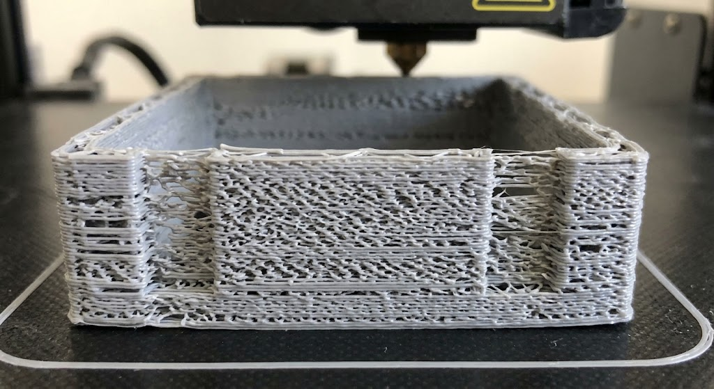
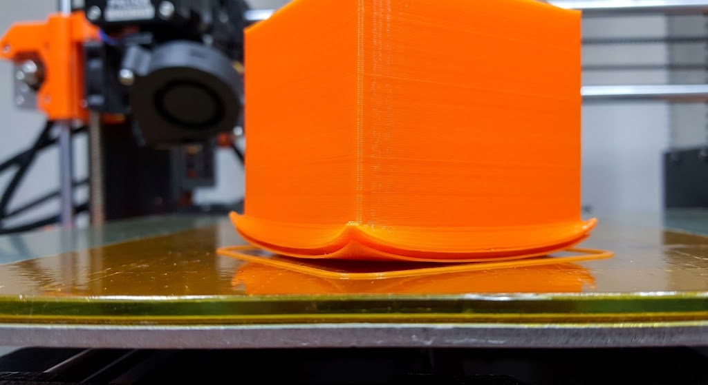
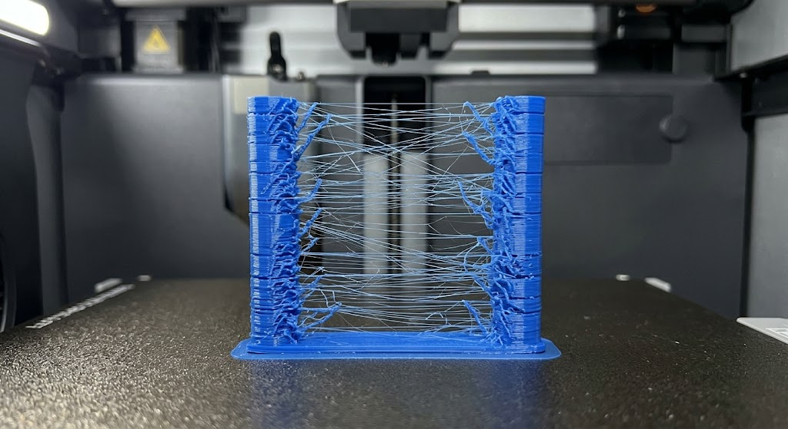

Sub-extrusión (Under-extrusion)
Causa: Falta de flujo de material o atasco parcial en la boquilla.
Solución: Revisa la temperatura de impresión y limpia el extrusor.
Ver Guía CompletaIdentifica y corrige fallas comunes en tus piezas impresas de manera sencilla y estructurada.
Explorar ErroresUtiliza nuestro buscador rápido para filtrar el error que estás experimentando:

Causa: Falta de flujo de material o atasco parcial en la boquilla.
Solución: Revisa la temperatura de impresión y limpia el extrusor.
Ver Guía Completa
Causa: Desprendimiento de las esquinas por enfriamiento rápido.
Solución: Incrementa la temperatura de la cama y usa adhesivo.
Ver Guía Completa
Causa: Retracción insuficiente o temperatura muy alta.
Solución: Aumenta la distancia y velocidad de retracción en Cura.
Ver Guía CompletaCompártelo con nosotros para analizarlo y agregarlo a la base de conocimiento.